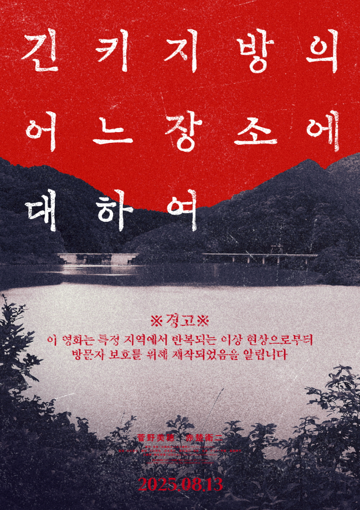

이 책은 기이한 괴담이 떠돌고 있는 긴키 지방의 어느 장소를 중심으로 한 페이크 르포르타주 형식의 소설입니다.
평소에 공포 테마를 좋아하여 읽게 되었는데, 정말 시간 가는 줄 모르고 읽었습니다.
이 책에서 가장 기억에 남는 문구는 다음과 같습니다.
"정보가 있으신 분은 연락 바랍니다"
이 부분을 읽고 사건의 시작이 말 한마디에서 시작될 수 있다는 것을 알았습니다. 이 책을 아직 읽어보지 않으셨다면 반드시 한 번쯤 읽어보시기를 추천합니다!
자세한 도서 정보가 궁금하시다면 아래 링크를 클릭해 주세요!
온라인 서점으로 이동하여 자세히 보기 (클릭)